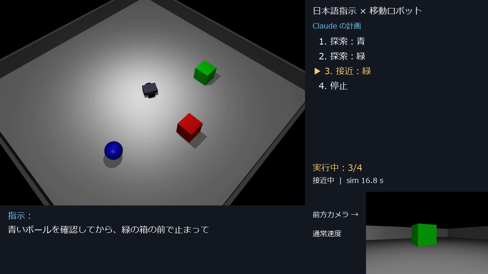

日本語で「青いボールを確認してから、緑の箱の前で止まって」のように指示すると、大規模言語モデル（Claude）が指示を解釈して行動計画を立て、 二輪ロボットがカメラ画像を頼りに目標を探し、近づき、止まるシステムを作成した。シミュレータには MuJoCo を使い、Windows 上だけで動作する。

家庭や倉庫で働くロボットには、専門家でない人が普段の言葉で指示できることが求められる。一方で、言語モデルに直接モーターを動かさせると、 誤った出力がそのまま危険な動作につながる。そこで本課題では、言語モデルには「何をするか」の計画だけを任せ、 「どう動くか」はカメラによる認識と決まった制御で確実に行うという役割分担を目標とした。
| 部分 | 内容 |
|---|---|
| シミュレータ | MuJoCo 3.15。床と壁の部屋に赤い箱・緑の箱・青い球を配置。差動二輪ロボットの前方に RGB-D カメラ（色画像と距離画像）を搭載。 |
| 計画（AI） | Claude（claude-opus-5-5）に指示を渡し、ツール呼び出し submit_plan で計画を受け取る。動作は search（探索）・approach（接近）・stop（停止）の3種類、対象は red / green / blue に限定。 |
| 計画の検証 | 受け取った計画をプログラム側で再検査（動作数1〜8、許可した動作と色のみ、最後は必ず stop）。不合格ならロボットを動かさない。 |
| 認識 | 色画像から指定色の画素を抽出し、画像内の左右位置と、距離画像から目標面までの距離を求める（ルールベース）。 |
| 移動制御 | 見えなければその場で回転して探索。見えたら画像の中央に合わせながら前進し、目標面まで約 0.65 m で停止。 |
| 記録 | 実行の様子を MP4 に保存（指示・計画・現在の手順・前方カメラ映像を重ねて表示）。 |
AI（Claude）は日本語の指示を、実行できる行動計画に変換する役割を担う（推論のみで、追加学習は行っていない）。
例えば「確認してから」は目標を見つけるだけの search、「前で止まって」は近づいて止まる approach と、指示の意味の違いを計画に反映する。
ロボットにできない指示（物を運ぶなど）には、動かずに stop だけの計画を返す。画像認識は AI ではなくルールベースである。
pip install だけで再現できるようにした。(1) 色認識による探索・接近（AI なし、初期位置から各色1回）
| 目標 | 到着までの時間（シミュレーション時間） | 停止位置（ロボット中心〜目標中心） |
|---|---|---|
| 赤い箱 | 6.3 秒 | 1.127 m |
| 緑の箱 | 8.5 秒 | 1.125 m |
| 青い球 | 16.4 秒 | 1.083 m |
停止距離 0.65 m に、目標の半分の大きさ（0.25 m）とロボット中心から前端まで（約 0.22 m）を加えた約 1.12 m とほぼ一致した。
(2) Claude による計画と実行
| 指示 | Claude の計画 | 結果 |
|---|---|---|
| 赤い箱へ行って | 探索：赤 → 接近：赤 → 停止 | 正しい計画（計画のみ確認） |
| 青いボールを確認してから、緑の箱の前で止まって | 探索：青 → 探索：緑 → 接近：緑 → 停止 | 完走（青を発見 9.0 秒、緑を発見 4.5 秒、緑に接近 7.8 秒） |
| コーヒーを持ってきて | 停止 | 動かずに停止 |
このほか、計画の検証・実行の中止・Claude 応答の検査を確かめる単体テスト4件がすべて成功した。 なお、Claude を使った試行はそれぞれ1回のみで、多数回の成功率は測っていない。
python -m venv .venv .\.venv\Scripts\python.exe -m pip install -r requirements.txt copy .env.example .env （.env に ANTHROPIC_API_KEY を設定） .\.venv\Scripts\python.exe src\main.py --instruction "赤い箱へ行って"
詳しくはリポジトリの README を参照。API キーはリポジトリに含めていない。